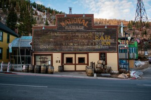
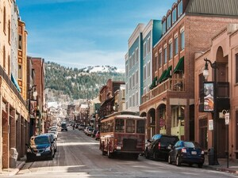
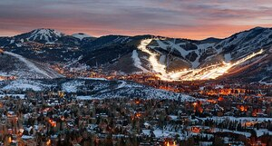
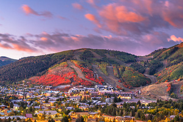
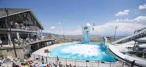

Park City was nearly a ghost town
When a group of Park City miners pitched the idea of a ski resort, as a last ditch effort to save the town. The base of operations would be on the 10,000 acres of land the miners owned. “Treasure Mountain (now Park City resort), was born and thus the beginning of Park City’s rise to ultimately becoming one of the greatest ski destinations in the U.S.
At one time
The Ontario Mine was widely considered to be the greatest mine in the world after a large vein of silver ore was found and it consistently had the highest yields.
Pony Express route
In 1860 a new Pony Express route passed through the area in front of the old stone house along what is now I-80. Soon after that the Kimball Brothers started a stage coach route which operated between Park City and Salt Lake City. That is how Kimball Junction came to be.
McPolin Barn
The iconic McPolin Barn (the White Barn) on 224 was erected in 1908 from recycled timber salvaged from an old tailings mill. The barn was built by fitting the timbers together without the use of nails. The McPolin Barn
Deer Valley
Deer Valley was one of the first ski resorts to provide the high level of service which is considered “standard” at today’s resorts; tissues in the lift line, referring to customers as “guests”, free parking lot shuttles, state-licensed day care facilities, ski valet service, uniforming all the employees and providing ski storage.
The information used was on Mountain Home Team Parks website here's a link.